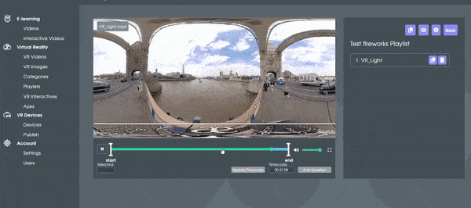
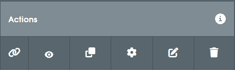
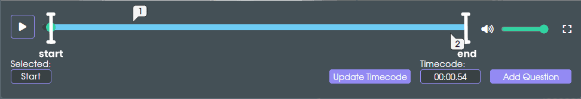
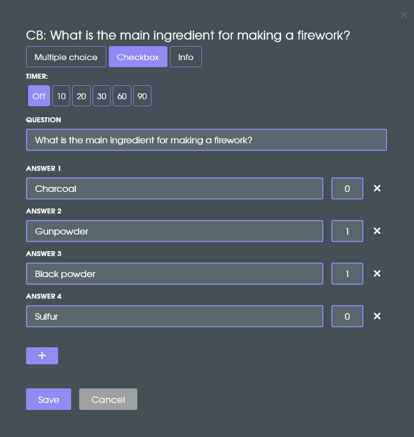
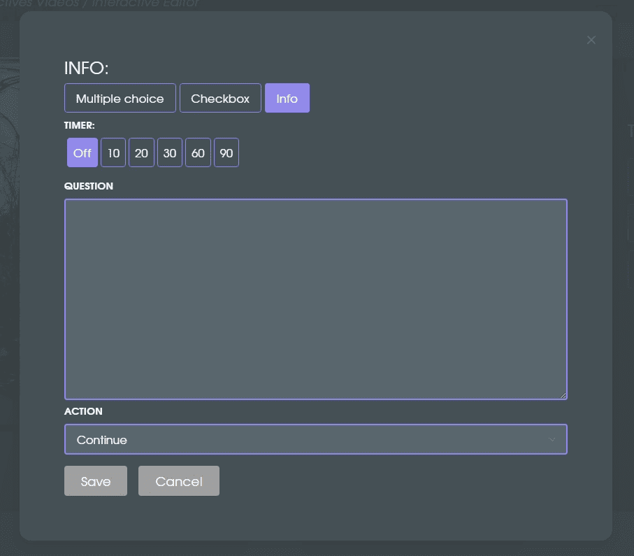

- An interactive video (or VR interactive) already created
- Access to the Interactive Editor
- Question text and answer options
Your interactive includes questions with scoring or timers to guide learners.
Things to consider before you start
Sign in at app.smartvrlab.nl. If you don’t have an account yet, follow the create-account guide.
If this is your first interactive, you may want to review: How to make a VR video, How to make a video, Create an interactive video, or How to make a VR interactive.
Why add questions?
Questions (and answers with scoring) make (VR) Interactives useful for training and assessment. They turn passive viewing into guided practice and let you branch stories or add feedback.
Step 1 - Navigate to Interactive Videos / VR Interactives
Open Interactive Videos (or VR Interactives for VR-only) from the left sidebar. You will see the Actions menu on the right.

Step 2 - Go to the editor
Click the pencil icon in the Actions menu to open the editor for your interactive video.
Step 3 - Add a question
Move the timeline marker to the time you want the question to appear, then click Add Question on the right.

Step 4 - Questions, answers, and points
Enter the question text and answers, select the correct option(s), and assign points (and/or penalties). Add a timer if you want time pressure, then save.
Step 5 - Add more questions
Repeat steps 3 and 4 to add additional questions. Each new question gets the next number in the timeline.
The 3 question types
Multiple Choice
One answer is correct. Great for branched narratives—different answers can lead to different outcomes.
Checkbox
Select multiple answers; more than one can be correct. Useful for knowledge checks (not for branching).

Info
Not a scored question—use it to provide feedback or extra info. In branched narratives you can link the info panel to a scene.
